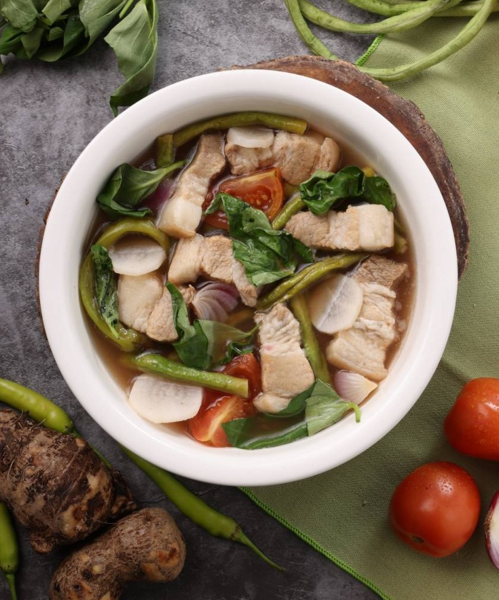

Sinigang na Baboy
A comforting pork sour soup with fresh vegetables.
Cooking turns ordinary meals into moments of creativity, comfort, and connection.
Explore Recipes
2BSIT-A chose this hobby as this collectively made us happy. Cooking begins with a simple joy. Experimenting in the kitchen, swapping tips, and discovering new flavors together. What started as casual-recipe sharing among friends turned into a collection of dishes we love to revisit whenever we wanat to unwind.
This webpage showcases popular food that you can cook when you're a beginner, or recipes that are popular enough to make and try. There is also featured recipes that you can use when you want to impress someone. Just general information on what to expect, or some tips as someone whos starting on the hobby.
Scroll left or right to explore
A comforting pork sour soup with fresh vegetables.

The iconic Filipino chicken dish simmered in soy sauce and vinegar.

Stir-fried noodles enjoyed during celebrations.

Peanut stew with vegetables and tender beef.
A refreshing Filipino dessert perfect for hot afternoons.

One of the Philippines' most beloved comfort foods, Sinigang na Baboy is known for its rich savory broth and signature sour flavor. It's a hearty meal best enjoyed with steaming hot rice and loved ones around the table.
15 mins
45 mins
4–6
TIPS
Discover simple techniques that make cooking more enjoyable, efficient, and rewarding.

Learn practical techniques that help you cook with confidence, improve flavor, and make every meal even better.
Learn More →
Cooking is more than preparing food. It's a relaxing hobby that inspires creativity, brings people together, and creates meaningful experiences.
Read More →
Cooking is more than simply preparing meals—it is a hobby that encourages creativity, patience, and lifelong learning. Every dish you make is an opportunity to discover new ingredients, techniques, and flavors while expressing yourself through food.
Beyond the kitchen, cooking strengthens relationships by bringing family and friends together over homemade meals. It creates lasting memories, promotes healthier eating habits, and turns everyday moments into meaningful experiences.

Developing good cooking habits starts with kitchen safety. Always prepare your ingredients before cooking, use a stable cutting board, and keep your workspace clean and organized.
Read recipes before starting, taste your food as you cook, and don't be afraid to experiment with herbs and seasonings. Practice and patience are the keys to becoming a more confident home cook.
Let's Stir the Pot!
Have a fresh idea, a brand partnership in mind, or a recipe that
needs troubleshooting?
Don't be a stranger! Drop a line at
letthemcook@gmail.com. Let's
whip up something incredible together.
Pamantasan ng Cabuyao, Laguna
(+63) 9070656731